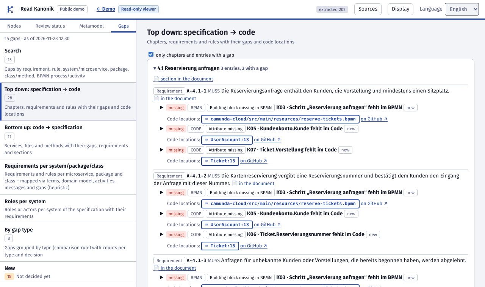
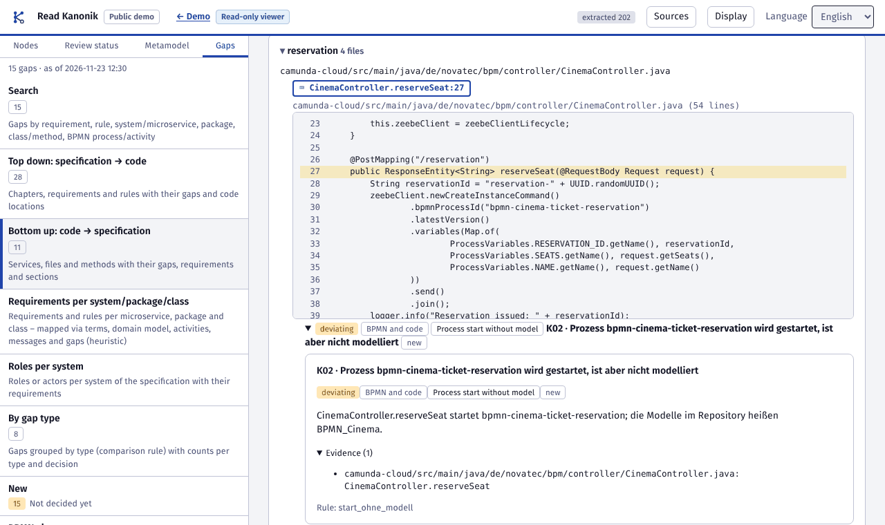
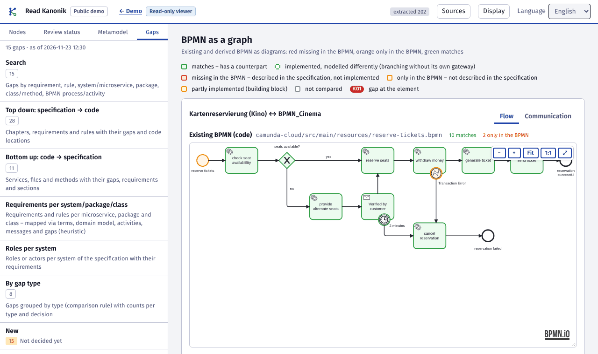
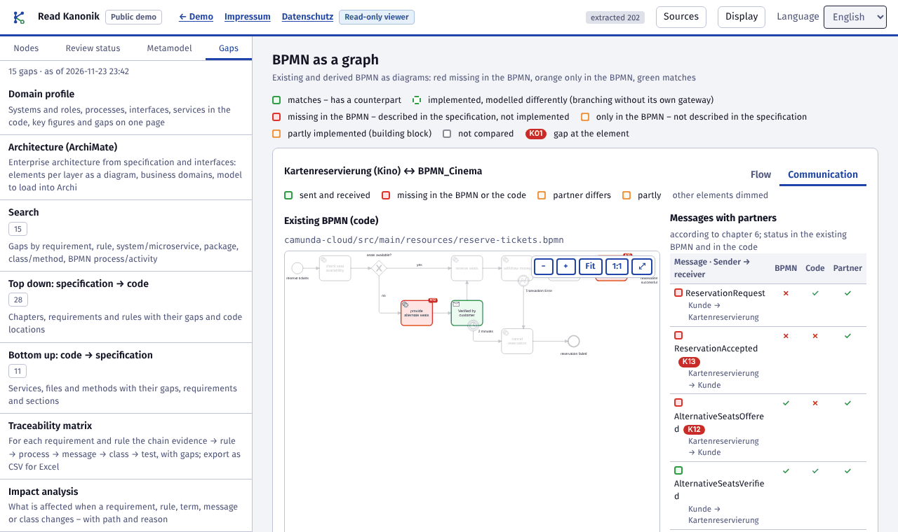
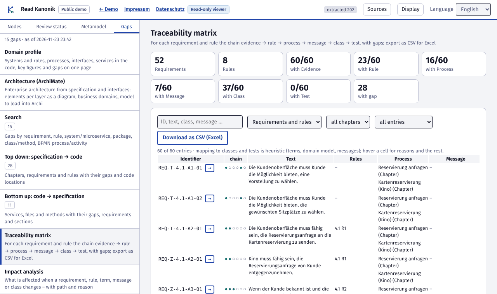
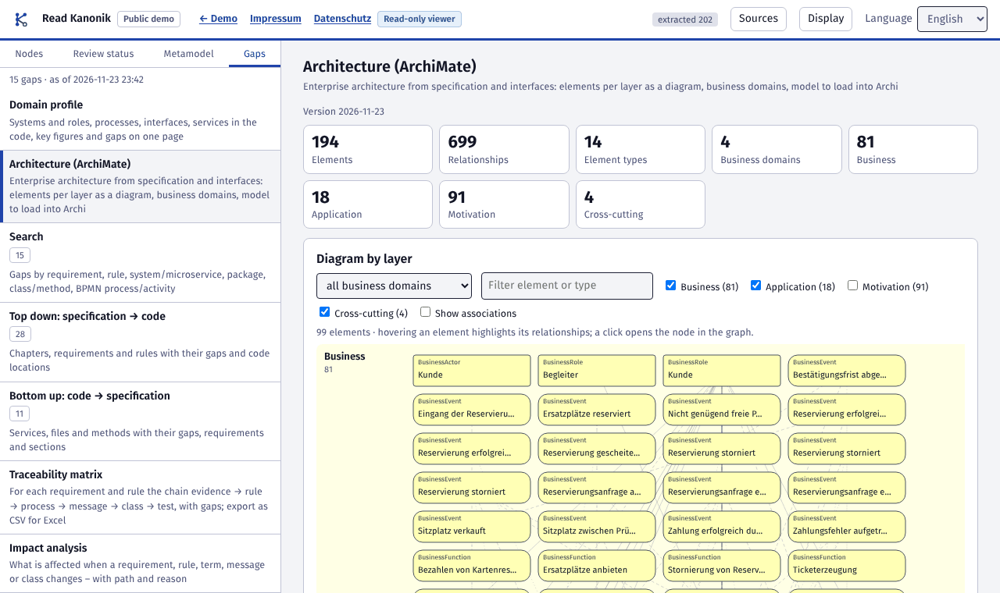

Cinema: ticket reservation
Seat check, alternative seats, payment and ticket delivery – specification versus Camunda 8 process and Java code.
Profile
The source documents are in German; requirements and names from them are quoted as written.
How this example came about
Choice
A small, publicly available project that really executes a business process as BPMN: camunda-platform-8-cinema by Novatec (Java, Spring Boot, Camunda 8). One process with a message, an error case, a timer and a gateway – enough to test the process side of the comparison: reading BPMN, finding job workers and message correlation in the code.
Preparation
There was no specification. We wrote one for this demo from the project's README and process diagram: roles, terms, processes, rules, requirements and a message table. In addition a fixed version of the code (commit) and a list of expected gaps as test oracle. The extraction by a language model was reviewed and stored as accepted state; every further run is repeatable without a language model.
What Kanonik did
Kanonik translated the specification into a knowledge graph (terms, roles, activities, rules, requirements with evidence), derived BPMN from it and read the existing BPMN process and the Java code – job workers, messages, REST endpoints. From the code it generated an OpenAPI description pointing to every place in the code. Comparing the three views specification ↔ BPMN ↔ code yields the gap list, measured against the test oracle.
Guided tour
- The specification
Chapter 4 describes the main ticket reservation process with requirements such as A-4.1-1. →
- The gaps
Among other things, the comparison finds messages the specification requires but the code never sends. →
- From finding to source
Every requirement in the gap list opens the specification at its evidence. →
- BPMN as a graph
The existing BPMN next to the one derived from the specification: red is missing from the model, orange exists only in the model, green matches. →
- Communication
Which message goes from whom to whom according to the specification – and where the model and the code actually send and receive it. →
- From requirement to class
The traceability matrix shows the chain evidence → rule → process → message → class → test for every requirement; ⇢ shows what a change affects. →
- Architecture
The ArchiMate model of the domain by layer – to view and as a file for Archi. →
View the specification
Gaps
17 gaps between specification, BPMN and code
Architecture (ArchiMate)
Enterprise architecture of the domain in ArchiMate 3.2, derived from specification and interfaces: 194 elements, 709 relationships.
Download model.xml for Archi (File → Import → Open Exchange XML Model)
Interfaces from the code
The project has no interface description. Kanonik generated it from the source code: OpenAPI for REST, AsyncAPI for events and messages. Every element points to its place in the code (x-kanonik-code).
2 REST operations, 0 event operations, 0 messages →
Graph and search (reader)
Sources and rights
Specification written for this demo; process and code from camunda-platform-8-cinema (Novatec, Apache-2.0).